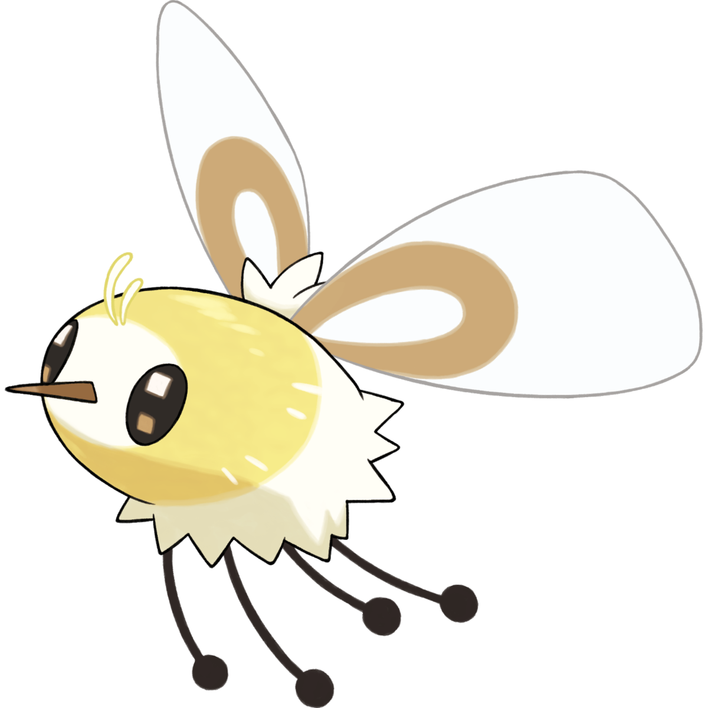

Cutiefly
Cutiefly, the Bee Fly Pokemon, is a bug fairy type based on the bee fly. Cutiefly is capable of detecting the aura of living things. It collects nectar and pollen from flowers, which are found by the color and brightness of their auras. However, when a living creature is excited, its aura resembles a flower in full bloom. As a result, Cutiefly tends to gather around beings feeling strong emotions.

Bee Fly
Bee flies feed on nectar and pollen. They mimic bees in appearance to protect themselves from predators. The larval stages are predators or parasitoids of the eggs and larvae of other insects. Bee flies are found worldwide.